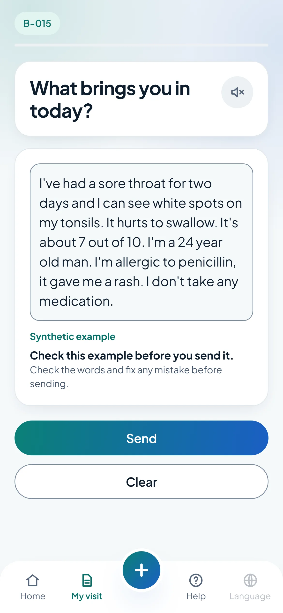
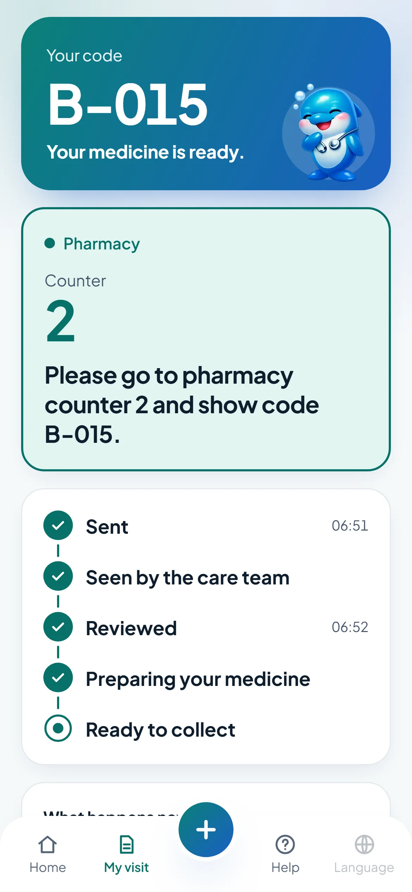
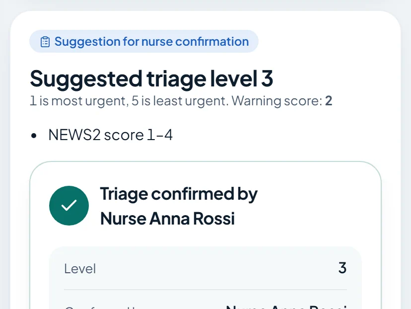
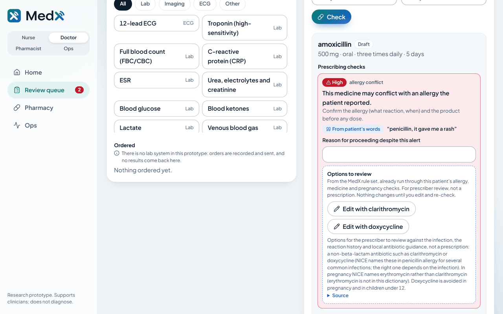
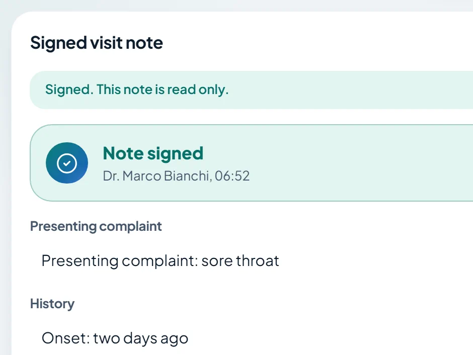
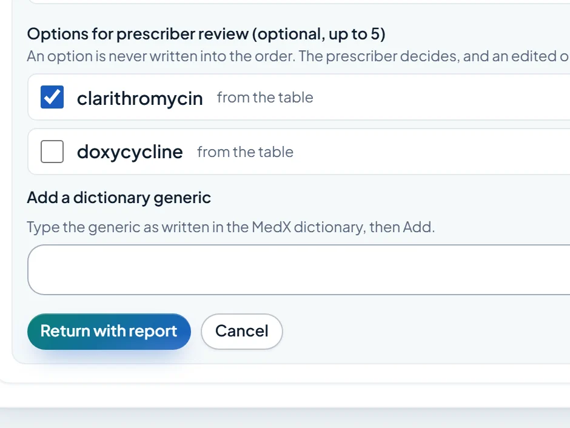
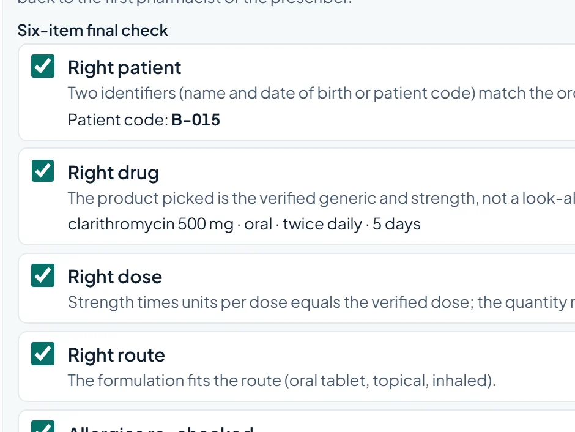

Multilingual pre-visit intake and care journey. Fin listens while nurses, doctors and pharmacists decide. Every field points back to the patient's own words.
Synthetic data onlyThai, Italian, EnglishEvery field cites the patient
Research prototype. Supports clinicians; the AI never diagnoses, prescribes or decides urgency. Live demo: medx.areazeroai.com · github.com/KingPhuripol/MedX-AI
MedX
2 / 10
A language gap and a wrong medicine list are both safety events
49.1% vs 29.5%
Physical harm in adverse events, limited-English patients vs English speakers, six US hospitals. Communication errors caused 52.4% vs 35.9%.1
13 to 59%
Patients with at least one unintended error in their admission medication list across six studies; omission was the commonest type.2
49.2% vs 27.0%
Doctor's day on EHR and desk work vs face time with the patient, four specialties.3
Thailand had 32.97 million foreign tourist arrivals in 2025.4 At the desk, the patient and the staff often do not share a language.
1 Divi et al., Int J Qual Health Care 2007 (PMID 17277013). 2 Studies M1 to M6 in docs/research/PHARMACY-PROBLEM.md; settings differ, so a range is shown. 3 Sinsky et al., Ann Intern Med 2016 (PMID 27595430). 4 Ministry of Tourism and Sports via Bernama, 6 Jan 2026. Full list: docs/research/PROBLEM.md.
MedX
3 / 10
One patient journey, one record, every role
1 Patient
Speaks or types in Thai, Italian or English, and checks every word before sending.
2 Nurse
Fields that cite the patient's sentence, a consult assistant, and a NEWS2 triage suggestion she confirms.
3 Doctor
Considerations (not a diagnosis), a draft note to sign, and orders with deterministic checks.
4 Pharmacist 1
Verifies, or returns with a report and options for prescriber review.
5 Pharmacist 2
Six-item final check; the pharmacist who verified cannot dispense.
6 Pickup
The patient's phone shows the counter and the code, never the medicine names.
A clinic manager sees the queue and the pharmacy pipeline. At every step a person decides.


Left: the patient checks a synthetic example before sending. Right: the medicine is ready at counter 2.
Real captures of the patient app (web export of the Expo app, English), synthetic golden case. Voice input uses the phone's or browser's cloud speech service.
MedX
4 / 10
Nurse: every field cites the patient, then confirm the triage

Left: each field is marked "From patient's words" and highlights the sentence; unsupported fields say "Needs check". Right: a NEWS2-based triage level is only a suggestion; the nurse confirms it.
Screens: nurse case and vitals, synthetic golden case, current build. The consult assistant listens only after a recorded consent step; speech is processed by the browser's cloud speech service.
MedX
5 / 10
Doctor: considerations, a signed note, orders with checks


Signed note: built from the patient's words; anything not found shows "Needs check". Considerations come from a fixed curated list, are labelled not a diagnosis and stay out of the note unless the doctor keeps them.
Orders: amoxicillin raises a deterministic High allergy alert with options to review, each re-checked for this patient. The AI never orders; the doctor does.
Screens: doctor orders with the prescribing checks, and the signed visit note, synthetic golden case, current build.
MedX
6 / 10
A two-stage pharmacy check, then the pickup call


1Pharmacist 1 verifies, or returns the order with a note, the flagged alerts and options for prescriber review. The system never writes an option into the order.
2Pharmacist 2 ticks a six-item final check and dispenses; the server refuses the pharmacist who verified. Then the patient is called to the counter.
Screens: pharmacist 1 return form and pharmacist 2 final check, synthetic golden case. Checks use a small rule set (59 drugs, 18 interactions, 5 alternative entries), not a complete drug-interaction check.
MedX
7 / 10
Safety by design: Fin prepares, people decide
Wrong or unsupported answers
No verified quote means "Needs check". Quotes must match the patient's words. Injection handling is not yet evaluated end to end.
Sensitive information
Pattern-based redaction before storage or any model call; imperfect. Synthetic data only. Keys stay server-side.
Uncertain results
Confidence on every field. Low confidence or provider failure: abstain, "needs human review".
High-risk decisions
18 red-flag rules run before any model; the model screen is add-only. Triage is confirmed by the nurse; orders are entered by the doctor.
Human review
Nothing is final until a clinician approves. Overrides need a reason. Two pharmacists. Every action is in the audit log.
Thai patient, chest pain and sweating in the first message: the nurse screen is interrupted and the patient's sentence is highlighted, with zero model calls. The patient's phone shows a calm "go to the desk now" screen.
Limits: considerations come from a fixed 12-presentation list, not a differential. NEWS2 triage is an adult suggestion the nurse confirms. Speech goes to a cloud speech service. Redaction is imperfect; reviewer identity is self-declared; the demo runs a mock model, so Gemma on AMD is unmeasured. Red-flag screen: earlier UI capture. Paths: pitch/SAFETY.md.
MedX
8 / 10
Evidence we can show, and the gap that motivated the screen
What
Count
Where
Synthetic cases (40 intake + 12 medication)
52
data/cases
Blind holdout cases, written without seeing the rules
18
data/holdout
Red-flag rules / reference tests
18 / 175
docs/clinical
Drugs in dictionary / medication-rule tests
59 / 253
docs/clinical
Consult rules / reference tests
51 / 87
docs/clinical
Automated tests, all passing
2,436
apps/web, vitest
Small synthetic blind holdout (18 cases), keyword rules alone
7 of 10
emergencies escalated; 3 of 8 non-emergencies raised a false alarm. Misses were lay wording keyword lists cannot cover. That is why a model safety screen can add flags.
Designed to run Gemma via the hackathon's AMD Token Factory (OpenAI-compatible). Until the endpoint is connected, the live demo and these results use a mock model, and the label says so.
With Gemma via AMD Token Factory
Holdout recall [pending AMD run]
Precision [pending AMD run]
Latency p50 / p95 [pending AMD run]
Synthetic evaluation, research prototype, small n; not clinically validated. Holdout: eval/results/holdout-rules-only.md, recorded before any change. Test count: vitest run in apps/web, 51 files, 18 Oct 2026. Pre-declared metrics: docs/ai/METRICS.md.
MedX
9 / 10
Business case: who buys, and why
Buyer: private hospitals and clinics with international patients, and clinics in tourist areas (Thailand had 32.97M foreign arrivals in 20251).
CEO / CFO
Interpreter cost and patient throughput at the front desk.
Head nurse
Documentation time: nurses spent 20.9% to 28.1% of a shift documenting in one observed study.2
Doctors
AI they can verify: each field links to the patient's sentence; nothing is final until the doctor signs.
Quality and risk team
Medication errors: 13% to 59% of patients had an admission-list error across six studies.3 Two pharmacists check every prescription.
ThroughputOne structured intake in the clinician's language.
TrustEvidence-linked fields, honest abstain and "Needs check".
Next step: pilotOne clinic, measured before and after. ROI figures to come from the pilot, not from this deck.
1 Ministry of Tourism and Sports via Bernama, 6 Jan 2026. 2 J Clin Nurs 2021 (PMID 33590554), ward nurses in one hospital. 3 Studies M1 to M6, docs/research/PHARMACY-PROBLEM.md; settings differ. No savings figure is claimed; none has been measured.
MedX
10 / 10
Next: prove it with clinicians before anyone relies on it
Run the pre-declared evaluation on Gemma via AMD Token Factory and publish every result, including misses.
Native-speaker review of Thai and Italian text.
A timed pilot with nurses, doctors and pharmacists, then ethics approval before any real data.
Not a medical device. Supports clinicians; the AI never diagnoses, prescribes or decides urgency.
Try it: medx.areazeroai.com Open source, MIT: github.com/KingPhuripol/MedX-AI Team MedX. Built by a human lead orchestrating Claude (Opus and Sonnet) and OpenAI Codex agents in role-based lanes.